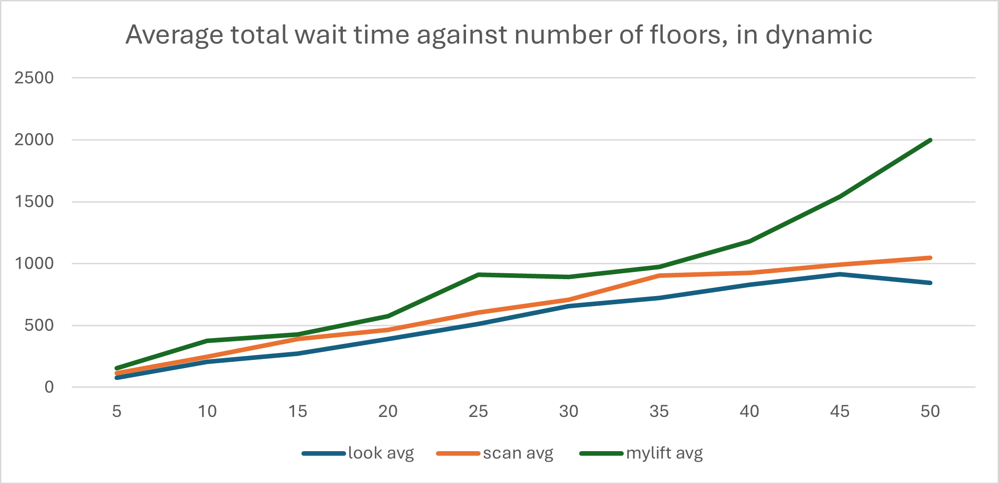

Algirthms for Lifts
This project was exploration in algorithmic performance, using the context of a lift to evaluate performance in terms of time complexity and simulated performance metrics.
This project was my first group project, and as such it was a big learning experience. Soft skills are so important in big projects, with multiple parties involved.
As a group we designed and built: a simulated enviroment, heap and queue data structures, scan, look and a custom algorithm.

Above is a diagram we made up to try to represent the overall structure of the project. Now, looking back, it would be good to make a UML diagram to remove ambiguity.
To give an overview, a main function was called with different parameters to affect how the simulation ran. Inside the simulation function, there were two objects: the Decision object and the Lift object, with the decision object encapsulating the different algorithms and data structures. The lift object contained a list of the current passengers and could take people on and off.
As my first group project, it taught me a lot about how other people may see and approach a large problem or project, and communicating these differences and understanding each other is really important for smooth teamwork. There were times where we would undo a bunch of work because we hadn't communicated and planned out our project enough. How this issue scales with large companies and projects is quite baffling.

Above is one of the graphs that shows the difference in performance when comparing the 3 algorithms. It shows the average wait time of one of the passengers against the number of floors. We can see clearly that our algorithm 'mylift' is performing the worst, with look performing the best. We made a lot of graphs like this that demonstrate a similar pattern in performance.
Reflection:
I think the biggest takeaway for me from this project is the importance of coordination. Having the language and patience to communicate with a team to get the best result is really important. Listening and making a serious effort to understand another's personal perspective.
I remember this quote about teamwork, that it makes things harder, but it is worth the effort, as it usually results in a better final product through the culmination of all the individual perspectives. The original was probably a lot more eloquent than that but you get the idea.
repo here